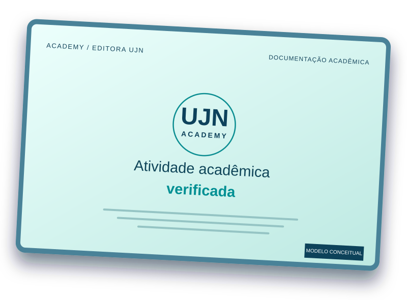

⌁
Descreva sua atividade
Informe o que realizou, em qual período, sua participação e a carga horária alegada.
Transforme grupos de estudos, projetos colaborativos e outras atividades independentes em registros acadêmicos verificáveis. Envie evidências para análise documental da Editora UJN. A emissão depende da aprovação e não garante aproveitamento das horas por instituições de ensino.

A análise vem antes da emissão. A UJN não se declara organizadora de ações realizadas por terceiros.
Informe o que realizou, em qual período, sua participação e a carga horária alegada.
Reúna atas, apresentações, registros dos encontros e outras provas relevantes.
A equipe avalia a suficiência das evidências, divergências e eventual comprovação de horas.
Se aprovado e pago, o documento terá autenticação e relatório resumido de validação.
A elegibilidade não significa aprovação automática. Cada solicitação depende de evidências suficientes.
O pagamento não compra aprovação nem horas complementares. A liberação depende da verificação documental.
Conheça o fluxo independente de cadastro, apresentação de evidências e acompanhamento. O portal está disponível para testes de navegação, sem receber documentos reais nesta etapa.
Abrir portal do aluno ↗Cadastro e solicitações — prévia.
Acessar portalCadastros, análise e evidências.
Acessar gestão privadaIndicadores, gráficos e estatísticas.
Abrir dashboardTestes e diagnóstico do sistema.
Abrir centro